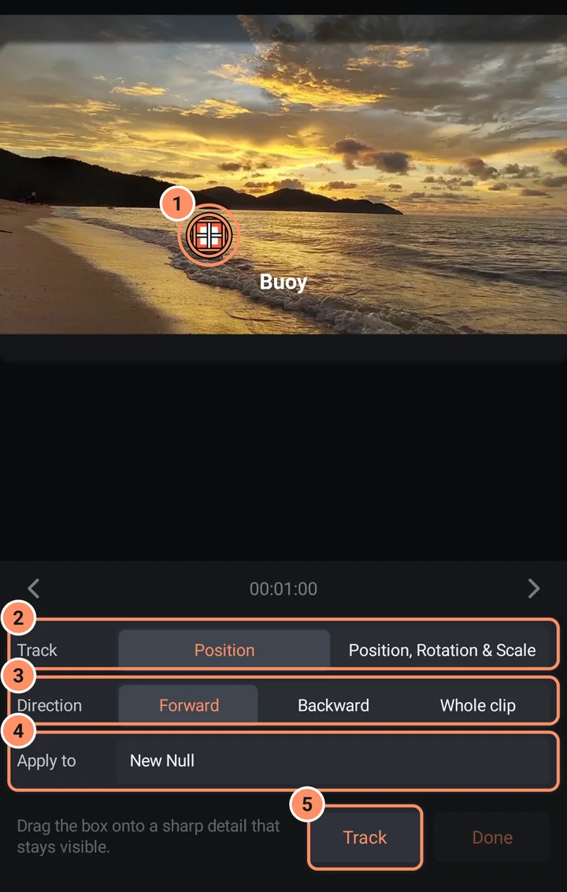

Seguimiento de movimiento
Haz que un título, una pegatina o una forma siga algo que se mueve en un vídeo.
El seguimiento de movimiento sigue un detalle de un vídeo, como la esquina de un cartel o una cara, y crea fotogramas clave de posición que puedes asignar a otra capa. Se ejecuta en tu móvil.
Cómo hacer un seguimiento
- Selecciona una capa de vídeo. Coloca el cabezal de reproducción en un fotograma donde el detalle se vea con claridad.
- Abre el menú de la capa (tres puntos) y toca Seguimiento de movimiento. Si el cabezal de reproducción está fuera del clip, saltará al primer fotograma.
- Aparece un recuadro sobre el vídeo. Arrástralo hasta un detalle nítido que se mantenga visible, como una esquina o una textura. Para la rotación y la escala, usa dos recuadros y colócalos sobre dos detalles del mismo objeto que estén bien separados.
- Elige qué quieres seguir y dónde aplicarlo (más abajo).
- Toca Seguimiento. Una barra de progreso muestra «Haciendo el seguimiento... 40%». Toca Cancelar para detenerlo; los fotogramas ya seguidos conservan sus fotogramas clave.
- Cuando termine, la app indica «Se han seguido N fotogramas. Los fotogramas clave están en ...». Toca Hecho.

Las opciones
| Opción | Alternativas |
|---|---|
| Seguimiento | Posición (un recuadro) o Posición, rotación y escala (dos recuadros) |
| Dirección | Adelante (la opción predeterminada) hace el seguimiento desde el cabezal de reproducción hasta el final del clip, Atrás desde el cabezal hasta el principio y Clip completo hace las dos cosas |
| Aplicar a | Nuevo objeto nulo (una nueva capa invisible llamada Track 1, con la misma duración que el clip) o una capa existente |
El destino recibe fotogramas clave de posición y, en el modo de dos recuadros, también de rotación y escala.
Usar el resultado
La forma más flexible es Nuevo objeto nulo: después, haz que tu título, pegatina o forma sea hijo del objeto nulo con el botón padre de la barra superior (consulta La pantalla del editor). A partir de ahí seguirá al vídeo. También puedes elegir la propia capa del título en Aplicar a.
Cuando se detiene el seguimiento
Si se pierde el detalle, el seguimiento se detiene con un mensaje: «Se ha perdido el seguimiento en el fotograma N. Vuelve a colocar el punto sobre el mismo detalle y toca Continuar». Vuelve a poner el recuadro sobre el mismo detalle, toca Continuar y el seguimiento continúa desde ahí. Si la zona tiene muy poco detalle, mueve el recuadro a una esquina o a una textura más nítida.
Consejos
- Elige algo con mucho contraste que se mantenga a la vista y no cambie de forma.
- Coloca el cabezal de reproducción en el fotograma más claro antes de poner el recuadro y luego elige Clip completo para hacer el seguimiento en ambos sentidos desde ahí.
- Después puedes editar los fotogramas clave como cualquier otro: consulta Fotogramas clave y suavizado.